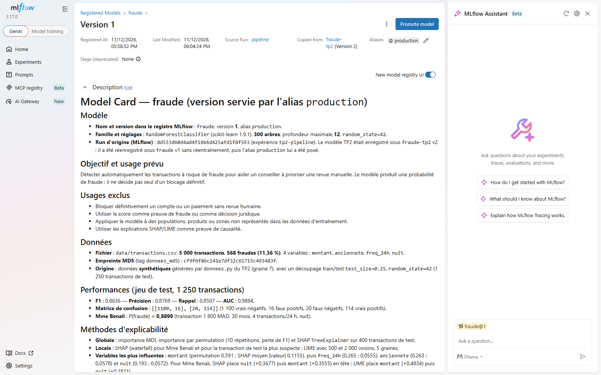
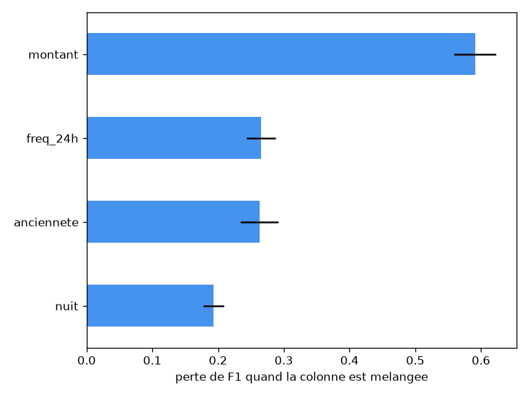
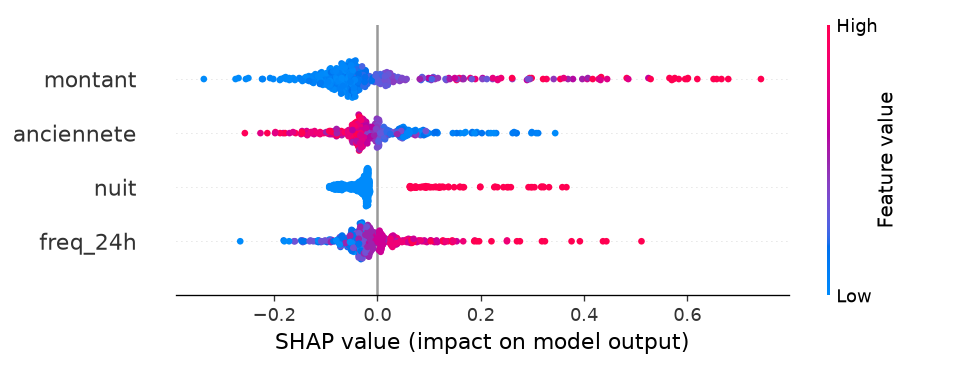
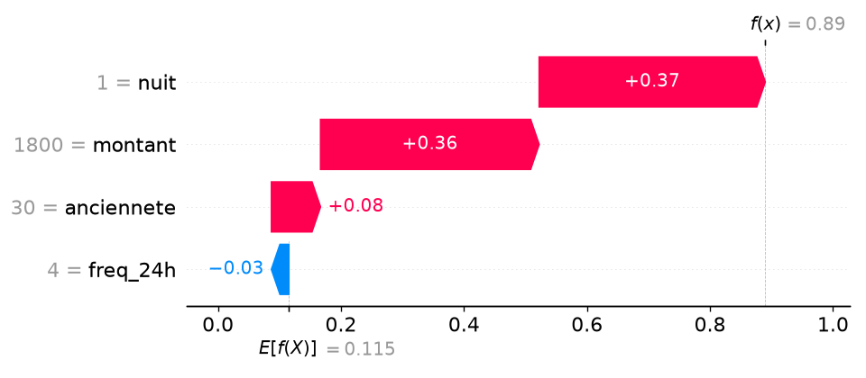
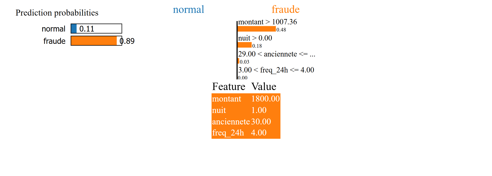
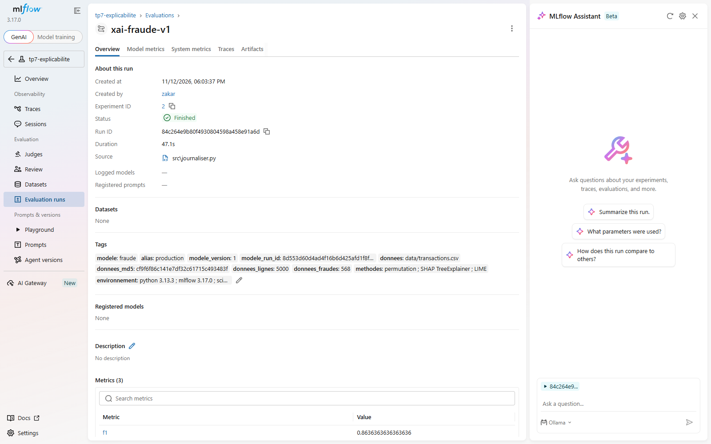
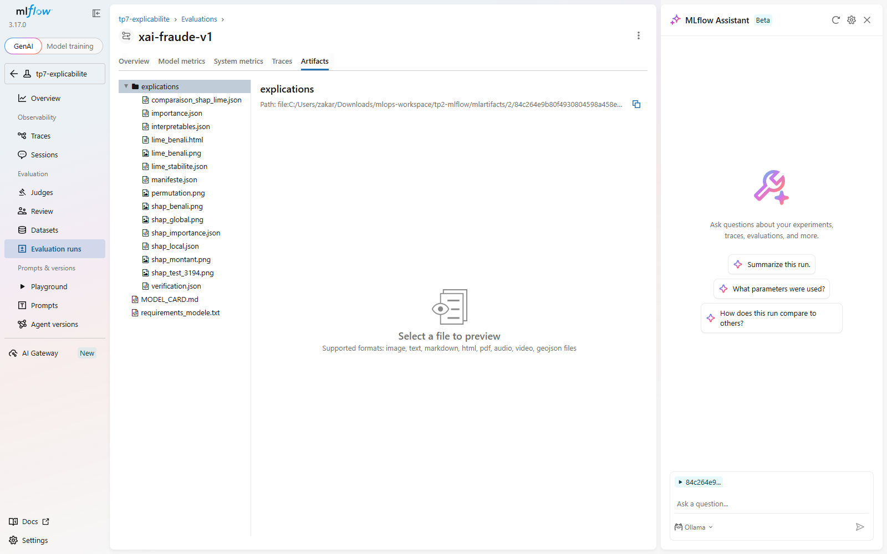
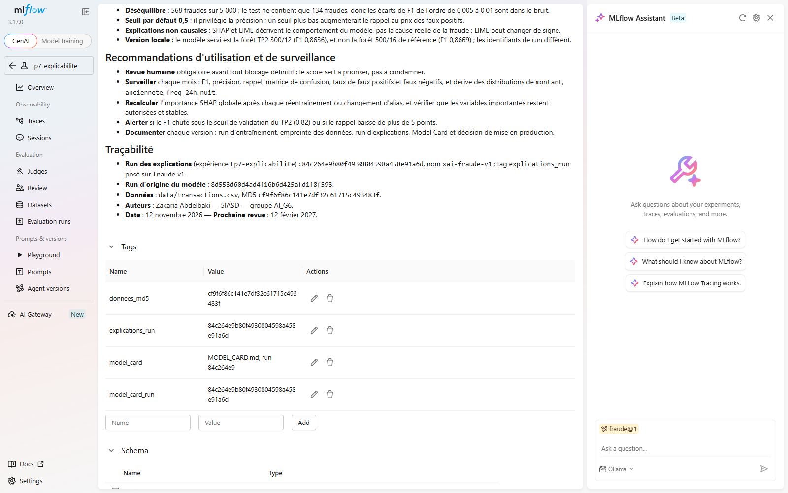

Étudiant : Zakaria Abdelbaki
Filière : 5IASD — Groupe AI_G6 — EMSI
Cours : Déploiement d'IA (2026-2027)
Date : 12 novembre 2026
Projet : tp7-xai
Modèle expliqué : fraude, version 1, alias production
Ce TP prolonge le TP2 : le modèle de détection de fraude est déjà entraîné et servi par le registre MLflow, mais il reste une boîte noire. L'objectif est de l'expliquer globalement (quelles variables comptent), localement (pourquoi Mme Benali est signalée), de comparer SHAP et LIME, de mesurer le coût d'un modèle intrinsèquement interprétable, puis de rendre toute la chaîne auditable : données, run d'entraînement, version du modèle, explications et Model Card.
Le fil conducteur est celui du cours : données → modèle → explications → documentation et audit. Une explication n'a de valeur d'audit que si l'on sait à quel modèle, à quelle version et à quelles données elle se rapporte.
| Composant | Version |
|---|---|
| Python | 3.13.3 |
| MLflow | 3.17.0 |
| scikit-learn | 1.9.1 |
| pandas | 3.0.6 |
| numpy | 2.5.3 |
| scipy | 1.18.1 |
| skops | 0.16.0 |
| SHAP | 0.54.1 |
| LIME | 0.2.0.1 |
| matplotlib | 3.11.2 |
Les versions du modèle ont été lues dans requirements_modele.txt, lui-même extrait avec mlflow.pyfunc.get_model_dependencies('models:/fraude@production'), conformément au sujet. Le fichier contient :
mlflow==3.17.0
numpy==2.5.3
pandas==3.0.6
scikit-learn==1.9.1
scipy==1.18.1
skops==0.16.0
Le registre du TP2 a bien été retrouvé sur le poste :
C:\Users\zakar\Downloads\mlops-workspace\tp2-mlflow\mlflow.db
C:\Users\zakar\Downloads\mlops-workspace\tp2-mlflow\mlartifacts\
C:\Users\zakar\Downloads\mlops-workspace\tp2-mlflow\data\transactions.csv
Il n'a pas été reconstruit avec l'Annexe A. En revanche, le modèle TP2 local n'était pas enregistré sous le nom fraude : il s'appelait fraude-tp2, version 2, sans alias. Ses caractéristiques sont :
RandomForestClassifier ;random_state=42 ;8d553d60d4ad4f16b6d425afd1f8f593 ;Pour respecter le nom et l'alias demandés par le sujet sans réentraîner ni remplacer le travail du TP2, le script src/preparer_modele_fraude.py a enregistré le même modèle (même source, même run) sous le nom fraude, version 1, puis a posé l'alias production. Cette adaptation est volontairement visible dans la Model Card et dans le rapport.
Conséquence importante : les valeurs de référence du PDF (forêt 500/16, F1 0,8669, P(Mme Benali)=0,924, transaction de test n° 668) ne sont pas recopiées. Les résultats ci-dessous sont ceux de la version réellement servie dans le registre local : forêt 300/12, F1 0,8636, P(Mme Benali)=0,8899, transaction la plus suspecte n° 3194. Le sujet prévoit explicitement ce cas : « Si l'alias production pointe sur une autre version dans votre registre, vos chiffres seront ceux de cette version : relevez-les, ils serviront de référence. »
Le serveur du TP2 est lancé dans un premier terminal PowerShell :
cd C:\Users\zakar\Downloads\mlops-workspace\tp2-mlflow
.venv\Scripts\Activate.ps1
mlflow server --host 127.0.0.1 --port 5000 `
--backend-store-uri sqlite:///mlflow.db `
--default-artifact-root ./mlartifacts
Le travail TP07 se fait dans un second terminal, depuis tp7-xai. La variable PYTHONUTF8=1 évite l'erreur d'encodage cp1252 provoquée par l'emoji affiché par MLflow 3 en fin de run :
cd tp7-xai
.venv\Scripts\Activate.ps1
$env:PYTHONUTF8 = "1"
tp7-xai, de l'environnement .venv et des dossiers data/, src/, reports/.transactions.csv depuis le TP2.requirements_modele.txt depuis le modèle MLflow.src/xai_commun.py : chargement par models:/fraude@production, découpage test_size=0.25, random_state=42, définition de la transaction de Mme Benali.src/verifier_modele.py.src/verifier_modele.pymodele : fraude version 1 | run 8d553d60
classe : RandomForestClassifier | {'n_estimators': '300', 'max_depth': '12'}
F1 : 0.8636 | F1 enregistre dans le run : 0.8636
precision : 0.8769 | rappel : 0.8507 | AUC : 0.9884
matrice : [[1100, 16], [20, 114]]
Mme Benali : P(fraude) = 0.8899
verification ecrite dans reports/verification.json
RandomForestClassifier de 300 arbres et profondeur 12.Capture 1a — sortie terminal réelle : voir le bloc de code ci-dessus (copie fidèle de l'exécution).
Capture 1b — onglet Model Registry de MLflow : la version fraude v1, l'alias production, la provenance fraude-tp2 v2 et le début de la Model Card.

Le script src/xai_importance.py calcule :
feature_importances_), calculée par la forêt sur les données d'entraînement ;random_state=0 : on mélange une colonne à la fois et on mesure la perte de F1.Tableau réel obtenu (reports/importance.json) :
| Variable | MDI (forêt) | Permutation | Écart-type |
|---|---|---|---|
| montant | 0,480 | 0,591 | 0,032 |
| freq_24h | 0,191 | 0,265 | 0,022 |
| anciennete | 0,236 | 0,263 | 0,029 |
| nuit | 0,093 | 0,193 | 0,016 |
Le classement par permutation est : montant (0,591) > freq_24h (0,265) > anciennete (0,263) > nuit (0,193). Le classement MDI est : montant (0,480) > anciennete (0,236) > freq_24h (0,191) > nuit (0,093).
Le script src/xai_global.py utilise shap.TreeExplainer, exact pour les forêts, sur un échantillon de 400 transactions de test (random_state=0). La sortie SHAP a trois dimensions (transaction, variable, classe) ; on garde la classe 1 = fraude.
Valeur de base réelle : 0,1153 (probabilité moyenne de fraude prédite par le modèle sur l'échantillon).
| Variable | Importance SHAP moyenne |valeur| |
|---|---|
| montant | 0,1155 |
| anciennete | 0,0578 |
| nuit | 0,0572 |
| freq_24h | 0,0555 |
anciennete devant freq_24h, la permutation fait l'inverse. L'écart permutation entre freq_24h (0,265) et anciennete (0,263) vaut 0,002, très inférieur aux écarts-types (0,022 et 0,029) : cet ordre n'est pas robuste. Il ne faut donc pas surinterpréter la deuxième place.nuit est le plus instructif : MDI = 0,093, permutation = 0,193. La MDI mesure la baisse d'impureté sur l'entraînement ; elle favorise les variables qui coupent souvent et haut dans les arbres. nuit est binaire et utilisée dans moins de splits, donc sa MDI est faible. La permutation mesure la dépendance du F1 de test à la colonne : mélanger nuit détruit un signal fort (paiement de nuit), ce qui fait perdre 0,193 de F1 en moyenne. La permutation est donc plus proche de l'usage réel, mais elle dépend du jeu de test et des corrélations entre variables.Capture 2a — tableau de permutation (graphique réel reports/permutation.png) :

Capture 2b — beeswarm SHAP global (reports/shap_global.png) :

Le graphique reports/shap_montant.png montre la contribution SHAP du montant en fonction du montant, colorée par nuit : la contribution devient positive à partir d'environ 1 000 MAD, puis augmente fortement avec le montant.
Transaction : montant = 1 800 MAD, anciennete = 30 mois, freq_24h = 4, nuit = 1.
Sortie réelle de src/xai_local.py :
--- benali : {'montant': 1800.0, 'anciennete': 30.0, 'freq_24h': 4.0, 'nuit': 1.0}
valeur de base : 0.1153
nuit +0.3677
montant +0.3555
anciennete +0.0798
freq_24h -0.0284
base + somme : 0.8899 | prediction : 0.8899 | ecart : 3.30e-14
La transaction de test la plus suspecte de notre modèle est l'index 3194 (et non 668, qui correspond à la forêt 500/16 de référence) :
--- test_3194 : {'montant': 8806.06, 'anciennete': 14.0, 'freq_24h': 7.0, 'nuit': 0.0}
valeur de base : 0.1153
montant +0.6568
anciennete +0.1459
freq_24h +0.1131
nuit -0.0316
base + somme : 0.9995 | prediction : 0.9995 | ecart : 7.77e-16
Pour Mme Benali :
0,1153 + 0,3677 + 0,3555 + 0,0798 - 0,0284 = 0,8899
Pour la transaction 3194 :
0,1153 + 0,6568 + 0,1459 + 0,1131 - 0,0316 = 0,9995
Dans les deux cas, valeur de base + somme des contributions SHAP = prédiction, à la précision machine près (écarts de l'ordre de 10⁻¹⁴ et 10⁻¹⁶). C'est la propriété d'efficacité des valeurs de Shapley : elle rend l'explication vérifiable numériquement, ce que LIME ne garantit pas.
« Madame Benali, votre paiement de 1 800 MAD a été signalé parce qu'il a été effectué de nuit et que son montant est nettement plus élevé que vos paiements habituels. Le modèle estime le risque à environ 89 %, mais un conseiller va vérifier l'opération avec vous avant toute décision. »
Cette phrase ne dit pas « le modèle a raison » ni « vous avez fraudé » : elle explique les deux facteurs qui ont fait monter le score et rappelle la revue humaine.
nuit est positive pour Mme Benali et négative pour la transaction 3194nuit = 1 : le paiement a lieu entre 0 h et 5 h, un signal que la forêt associe à la fraude. La contribution est +0,3677.nuit = 0 : l'absence de paiement de nuit est un facteur légèrement protecteur par rapport à la valeur de base, d'où −0,0316. Cela ne veut pas dire que « la nuit protège » en général ; cela signifie que, pour cette transaction, le fait de ne pas être un paiement nocturne réduit un peu le score. Les autres contributions (montant +0,6568, anciennete +0,1459, freq_24h +0,1131) dominent largement et expliquent la prédiction finale de 0,9995.Capture 3a — sortie terminal réelle : voir les blocs de code ci-dessus.
Capture 3b — waterfall SHAP de Mme Benali (reports/shap_benali.png) :

Le waterfall se lit de bas en haut : on part de E[f(X)] = 0,115, chaque barre rouge pousse vers la fraude, chaque barre bleue vers « normal », et on arrive à f(x) = 0,89.
LIME est agnostique : il n'utilise que m.predict_proba, ignore la structure de la forêt et apprend un modèle linéaire local autour de la transaction. Les seuils des règles (par exemple montant > 1007.36) sont les quartiles des données d'entraînement ; ils sont identiques pour toutes les graines.
Explication de référence (n = 2000 voisins, graine 0) :
regles : [('montant > 1007.36', 0.483),
('nuit > 0.00', 0.182),
('29.00 < anciennete <= 60.00', 0.026),
('3.00 < freq_24h <= 4.00', 0.001)]
La page interactive est dans reports/lime_benali.html et le graphique dans reports/lime_benali.png.
Tableau complet des poids LIME réellement calculés :
| Voisins | Graine | montant | nuit | anciennete | freq_24h |
|---|---|---|---|---|---|
| 500 | 0 | +0,459 | +0,244 | −0,007 | −0,035 |
| 500 | 1 | +0,499 | +0,245 | +0,060 | −0,018 |
| 500 | 2 | +0,406 | +0,208 | +0,002 | −0,021 |
| 500 | 3 | +0,384 | +0,192 | +0,015 | −0,028 |
| 500 | 4 | +0,479 | +0,189 | −0,005 | −0,035 |
| 2 000 | 0 | +0,483 | +0,182 | +0,026 | +0,001 |
| 2 000 | 1 | +0,429 | +0,236 | +0,032 | −0,037 |
| 2 000 | 2 | +0,440 | +0,180 | +0,025 | +0,012 |
| 2 000 | 3 | +0,455 | +0,205 | +0,020 | −0,016 |
| 2 000 | 4 | +0,455 | +0,228 | +0,034 | −0,003 |
Statistiques (moyenne ± écart-type, minimum–maximum) :
| Voisins | Variable | Moyenne ± écart-type | Min–max | Changements de signe | Signe stable ? |
|---|---|---|---|---|---|
| 500 | montant | +0,446 ± 0,044 | +0,384 à +0,499 | 0 | Oui |
| 500 | nuit | +0,216 ± 0,024 | +0,189 à +0,245 | 0 | Oui |
| 500 | anciennete | +0,013 ± 0,025 | −0,007 à +0,060 | 2 | Non |
| 500 | freq_24h | −0,028 ± 0,007 | −0,035 à −0,018 | 0 | Oui (négatif) |
| 2 000 | montant | +0,453 ± 0,018 | +0,429 à +0,483 | 0 | Oui |
| 2 000 | nuit | +0,206 ± 0,023 | +0,180 à +0,236 | 0 | Oui |
| 2 000 | anciennete | +0,028 ± 0,005 | +0,020 à +0,034 | 0 | Oui (positif) |
| 2 000 | freq_24h | −0,009 ± 0,017 | −0,037 à +0,012 | 3 | Non |
| Variable | SHAP (activité 3) | LIME, 2 000 voisins, graine 0 | Stable sur 5 graines ? |
|---|---|---|---|
| montant | +0,3555 | +0,4834 | Oui : positif aux deux tailles (500 : +0,384 à +0,499 ; 2 000 : +0,429 à +0,483) |
| nuit | +0,3677 | +0,1821 | Oui : positif aux deux tailles (500 : +0,189 à +0,245 ; 2 000 : +0,180 à +0,236) |
| anciennete | +0,0798 | +0,0262 | Non à 500 (2 changements de signe, −0,007 à +0,060) ; oui à 2 000 (+0,020 à +0,034), mais poids faible |
| freq_24h | −0,0284 | +0,0009 | Non à 2 000 (3 changements de signe, −0,037 à +0,012) ; oui négatif à 500 (−0,035 à −0,018) |
montant et nuit sont les deux seules contributions réellement stables et importantes. Leur signe ne change jamais et leur amplitude reste du même ordre.anciennete est instable à 500 voisins : elle passe de −0,007 à +0,060 puis revient près de zéro. À 2 000 voisins, elle devient positive et stable, mais son poids (0,020 à 0,034) est faible devant montant et nuit. On peut donc la mentionner comme facteur secondaire, pas comme cause principale.freq_24h est instable à 2 000 voisins : +0,001, −0,037, +0,012, −0,016, −0,003. Trois changements de signe. À 500 voisins, elle est négative de façon stable, mais avec un poids très faible. Cette variable ne doit pas être présentée à une cliente comme une cause.montant et nuit passent ce filtre. Les autres facteurs peuvent être regroupés en « autres éléments pris en compte » sans les détailler.Capture 4a — sortie terminal réelle : voir le tableau complet ci-dessus.
Capture 4b — page HTML interactive LIME (reports/lime_benali.html) :

La page affiche les probabilités prédites (normal 0,11 ; fraude 0,89), les règles et leurs poids, ainsi que les valeurs des quatre variables.
Tous les modèles sont évalués sur le même jeu de test de 1 250 transactions, dont 134 fraudes.
| Modèle | F1 | Fraudes détectées | Ce que l'on peut expliquer sans outil |
|---|---|---|---|
Forêt fraude@production (300 arbres, profondeur 12) |
0,8636 | 114 / 134 | Rien directement : il faut SHAP ou LIME |
| Régression logistique, montant brut | 0,7407 | 90 / 134 | Coefficients et odds ratios, mais le montant brut est mal modélisé |
Régression logistique, log10(montant) |
0,8593 | 113 / 134 | Coefficients et odds ratios, très lisible |
| Arbre de profondeur 2 (4 feuilles) | 0,2293 | 18 / 134 | 4 règles très courtes, mais performance très faible |
| Arbre de profondeur 3 (8 feuilles) | 0,5737 | 72 / 134 | 8 feuilles, règles lisibles, mais 42 fraudes manquées |
| Arbre de profondeur 6 (50 feuilles) | 0,7510 | 95 / 134 | 50 feuilles, lisible mais déjà volumineux |
| Arbre sans limite (206 feuilles) | 0,7556 | 102 / 134 | 206 feuilles : illisible en pratique |
Précisions utiles pour la question 8 :
[[1100, 16], [20, 114]].log10(montant) : précision 0,8760, rappel 0,8433, matrice [[1100, 16], [21, 113]].La forêt et la logistique log10 ont le même nombre de faux positifs (16) ; la forêt détecte une fraude de plus (114 contre 113) et a un faux négatif de moins (20 contre 21).
Coefficients standardisés réels :
{'anciennete': -2.58, 'freq_24h': 2.75, 'nuit': 2.23, 'log_montant': 4.93}
Interprétation :
log_montant a le coefficient positif le plus fort (+4,93) : plus le montant est élevé en ordre de grandeur, plus le risque augmente.freq_24h (+2,75) et nuit (+2,23) augmentent le risque.anciennete (−2,58) le diminue : les clients plus anciens sont moins risqués.Arbre réel (reports/arbre_profondeur3.txt) :
|--- montant <= 1505.7
| |--- freq_24h <= 6.5
| | |--- nuit <= 0.5
| | | |--- class: 0
| | |--- nuit > 0.5
| | | |--- class: 0
| |--- freq_24h > 6.5
| | |--- montant <= 371.9
| | | |--- class: 0
| | |--- montant > 371.9
| | | |--- class: 0
|--- montant > 1505.7
| |--- nuit <= 0.5
| | |--- anciennete <= 69.5
| | | |--- class: 1
| | |--- anciennete > 69.5
| | | |--- class: 0
| |--- nuit > 0.5
| | |--- anciennete <= 64.0
| | | |--- class: 1
| | |--- anciennete > 64.0
| | | |--- class: 1
Lecture simplifiée en règles « SI … ALORS fraude » :
montant > 1505,7 ET nuit = 0 ET anciennete <= 69,5 ALORS fraude.montant > 1505,7 ET nuit = 1 ALORS fraude (quel que soit l'âge ; l'arbre sépare à 64 mois mais les deux feuilles sont fraudes).montant <= 1505,7 ALORS normal (toutes les feuilles de cette branche sont classe 0).montant > 1505,7 ET nuit = 0 ET anciennete > 69,5 ALORS normal.On peut résumer : fraise si montant > 1505,7 ET (nuit = 1 OU anciennete <= 69,5). C'est une règle courte, lisible, mais elle ne détecte que 72 fraudes sur 134.
Chemin réel (nœuds 0 → 8 → 12 → 13) :
| Nœud | Condition | Valeur de Mme Benali | Direction |
|---|---|---|---|
| 0 | montant <= 1505,68 ? |
1 800 | Non → droite (nœud 8) |
| 8 | nuit <= 0,5 ? |
1 | Non → droite (nœud 12) |
| 12 | anciennete <= 64,0 ? |
30 | Oui → gauche (feuille 13) |
| 13 | feuille | — | P(fraude) = 0,983 |
Mme Benali est donc dans la feuille 13, avec une probabilité de fraude de 0,983 selon l'arbre de profondeur 3. C'est cohérent avec la forêt (0,8899) et avec SHAP (nuit et montant en tête).
log10(montant) est presque aussi performante (F1 0,8593, 113 fraudes, mêmes 16 faux positifs) et intrinsèquement lisible : coefficients, odds ratios, sens des effets.log10 est le meilleur compromis si l'on exige un modèle intrinsèquement explicable, la forêt + SHAP restant le choix de performance.Le script src/journaliser.py crée l'expérience tp7-explicabilite et le run xai-fraude-v1.
84c264e9b80f4930804598a458e91a6dFINISHEDmodele = fraudealias = productionmodele_version = 1modele_run_id = 8d553d60d4ad4f16b6d425afd1f8f593donnees = data/transactions.csvdonnees_md5 = cf9f6f86c141e7df32c61715c493483fdonnees_lignes = 5000donnees_fraudes = 568methodes = permutation ; SHAP TreeExplainer ; LIMEenvironnement = python 3.13.3 ; mlflow 3.17.0 ; scikit-learn 1.9.1shap_echantillon = 400, lime_num_samples = 2000, lime_random_state = 0, permutation_n_repeats = 10.Le dossier explications/ contient 15 fichiers :
comparaison_shap_lime.json
importance.json
interpretables.json
lime_benali.html
lime_benali.png
lime_stabilite.json
manifeste.json
permutation.png
shap_benali.png
shap_global.png
shap_importance.json
shap_local.json
shap_montant.png
shap_test_3194.png
verification.json
Le run contient aussi MODEL_CARD.md et requirements_modele.txt à la racine de ses artefacts.
Les tags posés sur la version fraude v1 sont :
| Tag | Valeur |
|---|---|
explications_run |
84c264e9b80f4930804598a458e91a6d |
donnees_md5 |
cf9f6f86c141e7df32c61715c493483f |
model_card |
MODEL_CARD.md, run 84c264e9 |
model_card_run |
84c264e9b80f4930804598a458e91a6d |
Ainsi, un auditeur qui part de la version du modèle trouve immédiatement le run d'explications, l'empreinte des données et la Model Card. Inversement, le run d'explications porte modele_version et modele_run_id, ce qui permet de revenir à la version exacte et au run d'entraînement.
Capture 5a — vue d'ensemble du run xai-fraude-v1 (métriques, paramètres, tags) :

Capture 5b — dossier explications/ du run :

La Model Card complète est à la racine du projet : MODEL_CARD.md. Elle contient les rubriques demandées : identification et version, objectif et usage prévu, usages exclus, données, performances, méthodes d'explicabilité, comparaison avec les modèles interprétables, limites et risques, recommandations de surveillance, traçabilité.
Son contenu intégral est repris en annexe A.
Le script src/publier_card.py :
84c264e9… ;MODEL_CARD.md ;fraude v1 ;model_card et model_card_run.Sortie réelle :
Model Card attachee a fraude v1 et au run 84c264e9
description commence par : # Model Card — fraude (version servie par l'alias `production`)
tag model_card : MODEL_CARD.md, run 84c264e9
MODEL_CARD.md dans le run : True
Capture 6 — page de la version fraude v1 : description et tags :

La capture 1 montre le haut de la même page (alias production, provenance, début de la Model Card) ; la capture 6 montre les tags donnees_md5, explications_run, model_card et model_card_run.
Pourquoi charger par models:/fraude@production plutôt que par un fichier ou un numéro de version ?
Parce que l'alias est un pointeur stable vers la version actuellement servie. Le code ne dépend ni d'un chemin de fichier local ni d'un numéro de version codé en dur : si la version 2 est promue en production, l'alias est déplacé et le même appel charge la nouvelle version. Cela évite les erreurs du type « on explique un modèle, mais c'est un autre qui est servi ». Le registre garantit aussi que l'on récupère l'objet scikit-learn d'origine, nécessaire à SHAP.
Si l'alias était déplacé vers la version 2, que deviendraient les explications de l'activité 6, et comment le saurait-on ?
Les explications de l'activité 6 resteraient attachées à la version 1 : le run 84c264e9… porte modele_version = 1 et modele_run_id = 8d553d60…, et la version 1 porte le tag explications_run = 84c264e9…. La version 2 n'aurait pas ces tags. Un auditeur le verrait en comparant modele_version du run et le tag explications_run de la version. Si l'on relançait le pipeline après le déplacement de l'alias, il chargerait la version 2 et créerait un nouveau run d'explications avec modele_version = 2 ; les deux runs seraient distincts et traçables. Les anciennes explications ne seraient pas perdues, mais elles ne s'appliqueraient plus au modèle servi : il faudrait les archiver comme « explications de la v1 » et produire celles de la v2.
La MDI et la permutation donnent-elles le même classement ?
Non, pas exactement. Nos résultats :
montant 0,480 > anciennete 0,236 > freq_24h 0,191 > nuit 0,093.montant 0,591 > freq_24h 0,265 > anciennete 0,263 > nuit 0,193.Le haut (montant) et le bas (nuit) sont les mêmes, mais anciennete et freq_24h sont inversés. L'écart permutation entre les deux (0,265 contre 0,263) est de 0,002, très inférieur aux écarts-types (0,022 et 0,029) : cet ordre n'est pas robuste.
Expliquez la différence observée sur nuit (0,093 contre 0,193) à partir de la façon dont chacune est calculée.
La MDI est calculée pendant l'entraînement : elle mesure la baisse moyenne d'impureté (Gini) apportée par les splits sur cette variable. Elle favorise les variables qui coupent souvent et haut dans les arbres ; nuit est binaire et utilisée dans moins de splits, donc sa MDI est faible (0,093). La permutation est calculée sur le jeu de test : on mélange la colonne nuit et on mesure la perte de F1. Mélanger nuit détruit un signal fort (les paiements de nuit sont surreprésentés dans les fraudes), ce qui fait perdre 0,193 de F1 en moyenne. La permutation mesure donc la dépendance du modèle à la variable pour la performance de test, pas la fréquence d'utilisation dans les arbres. C'est pourquoi nuit est sous-estimée par la MDI.
Dans votre graphique SHAP global, dans quel sens agit l'ancienneté ?
Dans le beeswarm, les points rouges (ancienneté élevée) sont à gauche de zéro (contributions négatives) et les points bleus (ancienneté faible) à droite (contributions positives). Autrement dit, plus un client est ancien, plus le modèle réduit son risque de fraude ; plus son compte est récent, plus le risque augmente. C'est cohérent avec le coefficient négatif de l'ancienneté dans la régression logistique (−2,58) et avec l'odds ratio de 0,928 par mois.
Qu'apporte ce graphique que la permutation ne dit pas ?
La permutation donne une importance scalaire (une perte moyenne de F1), sans signe ni forme. Le beeswarm montre :
montant, la contribution devient positive vers 1 000 MAD puis augmente ; pour nuit, l'effet est binaire (deux nuages) ; pour anciennete, l'effet est progressif ;La permutation répond à « quelle variable compte en moyenne ? » ; le beeswarm répond à « dans quel sens et pour quels types de transactions ? ».
Pour Mme Benali, nuit est la première cause du blocage ; dans l'importance SHAP globale, elle n'est que troisième. Est-ce une contradiction ?
Non. L'importance globale est la moyenne des valeurs absolues des contributions sur 400 transactions : nuit = 0,0572, juste derrière anciennete (0,0578) et loin derrière montant (0,1155). Cette moyenne dilue les cas où nuit = 1, qui sont minoritaires (environ 18 % des transactions). Localement, pour Mme Benali, nuit = 1 et son effet est fort : +0,3677, devant montant (+0,3555). Une variable peut donc être globalement moyenne et localement décisive. C'est exactement la différence entre importance moyenne et contribution locale.
Vérifiez la propriété d'efficacité sur vos chiffres.
Pour Mme Benali :
0,1153 (base) + 0,3677 (nuit) + 0,3555 (montant) + 0,0798 (anciennete) − 0,0284 (freq_24h)
= 0,8899 = prédiction
L'écart numérique est de 3,30 × 10⁻¹⁴. Pour la transaction 3194 :
0,1153 + 0,6568 + 0,1459 + 0,1131 − 0,0316 = 0,9995 = prédiction
L'écart est de 7,77 × 10⁻¹⁶. La propriété d'efficacité est donc vérifiée à la précision machine, pour les deux explications locales.
Phrase destinée à Mme Benali :
« Madame Benali, votre paiement de 1 800 MAD a été signalé parce qu'il a été effectué de nuit et que son montant est nettement plus élevé que vos paiements habituels. Le modèle estime le risque à environ 89 %, mais un conseiller va vérifier l'opération avec vous avant toute décision. »
Pour la transaction 3194, nuit a une contribution négative : pourquoi ?
Parce que nuit = 0 : la transaction n'est pas un paiement nocturne. Par rapport à la valeur de base (0,1153), l'absence de ce signal de risque réduit légèrement le score, d'où −0,0316. Ce n'est pas une contradiction avec le cas de Mme Benali : pour elle, nuit = 1 et le signal est positif (+0,3677). La contribution SHAP est relative à la valeur de base et aux autres variables ; elle ne dit pas que « la nuit protège » dans l'absolu. Pour la transaction 3194, les contributions positives du montant (+0,6568), de l'ancienneté (+0,1459) et de la fréquence (+0,1131) dominent largement la petite contribution négative de nuit, et la prédiction finale est 0,9995.
Quelles contributions restent stables sur les cinq graines, lesquelles changent de signe ?
montant (500 : +0,384 à +0,499 ; 2 000 : +0,429 à +0,483) et nuit (500 : +0,189 à +0,245 ; 2 000 : +0,180 à +0,236). Aucun changement de signe.anciennete : change de signe à 500 voisins (2 changements, de −0,007 à +0,060) ; devient positive et stable à 2 000 voisins (+0,020 à +0,034), mais avec un poids faible.freq_24h : stable négative à 500 voisins (−0,035 à −0,018), mais instable à 2 000 (3 changements de signe, de −0,037 à +0,012), avec un poids très faible.Quelle règle adopteriez-vous avant de communiquer une explication à un client ?
Je fixerais la graine et la taille du voisinage (2 000), je répéterais l'explication sur au moins 5 graines, et je ne communiquerais que les variables qui remplissent deux conditions :
Dans notre cas, seuls montant et nuit passent ce filtre. anciennete est stable à 2 000 mais trop faible ; freq_24h change de signe. Je présenterais donc à Mme Benali le montant et le paiement de nuit, et je regrouperais le reste en « autres éléments pris en compte ». Je ne communiquerais jamais une valeur LIME unique sans intervalle de variation.
SHAP et LIME désignent-ils les mêmes causes principales pour Mme Benali ?
Oui pour les deux premières, mais dans un ordre différent :
nuit (+0,3677) > montant (+0,3555) > anciennete (+0,0798) > freq_24h (−0,0284).montant (+0,4834) > nuit (+0,1821) > anciennete (+0,0262) > freq_24h (+0,0009).Les deux méthodes pointent le montant et la nuit comme causes principales, avec un désaccord sur l'ordre. Elles s'accordent sur le signe de montant, nuit et anciennete ; elles divergent sur freq_24h, mais avec des valeurs très faibles (−0,0284 contre +0,0009), donc non matérielles.
Pourquoi ne faut-il pas comparer directement leurs nombres ?
Parce que les deux méthodes ne mesurent pas la même chose :
base + somme = prédiction. Elles sont exprimées dans l'espace de la probabilité prédite (pour la classe 1) et sont exactes pour une forêt avec TreeExplainer.Comparer 0,3677 (SHAP) et 0,1821 (LIME) comme s'il s'agissait de la même unité n'a donc pas de sens. On compare les signes, les classements et la stabilité, pas les amplitudes.
Laquelle choisir pour ce modèle, et pourquoi ?
Je choisirais SHAP pour l'explication officielle et l'audit, car :
TreeExplainer est exact et rapide ;LIME reste utile comme contre-expertise et pour produire une explication pédagogique locale, mais son instabilité (changements de signe de freq_24h et anciennete) interdit de l'utiliser seul pour justifier une décision. La démarche retenue est donc : SHAP pour l'audit, LIME pour le contrôle de cohérence, et revue humaine pour la décision.
La logistique avec log10(montant) détecte 113 fraudes sur 134, la forêt 114. Quel modèle mettriez-vous en production pour bloquer des paiements ?
Je mettrais la forêt en production pour le blocage, mais avec revue humaine, car :
log10 ;Cependant, l'écart est très faible : une fraude sur 134, soit 0,0043 de F1. Avec seulement 134 fraudes dans le jeu de test, une seule fraude change le F1 d'environ 0,007 ; l'écart est donc dans le bruit. La logistique log10 est presque équivalente et beaucoup plus lisible : coefficients, odds ratios, sens des effets, pas besoin de SHAP pour expliquer une décision. Si la politique de l'entreprise exige un modèle intrinsèquement explicable (par exemple pour une décision de blocage contestable), je choisirais la logistique log10. Si la priorité est de maximiser la détection avec une explication post-hoc, je garde la forêt avec SHAP et revue humaine. Dans les deux cas, je ne bloque pas automatiquement : les 16 faux positifs et les 20 faux négatifs de la forêt imposent une vérification humaine.
Dans six mois, Mme Benali conteste. Quels éléments enregistrés dans ce TP permettent de rejouer la décision et son explication ?
fraude v1, alias production, run d'origine 8d553d60d4ad4f16b6d425afd1f8f593, artefact model.skops et requirements_modele.txt (MLflow 3.17.0, scikit-learn 1.9.1, etc.).data/transactions.csv, 5 000 lignes, 568 fraudes, empreinte MD5 cf9f6f86c141e7df32c61715c493483f, découpage test_size=0.25, random_state=42.84c264e9b80f4930804598a458e91a6d, avec les tags modele_version, modele_run_id, donnees_md5, methodes, les paramètres (shap_echantillon=400, lime_num_samples=2000, lime_random_state=0, permutation_n_repeats=10) et les métriques.verification.json, shap_local.json (transaction de Mme Benali, valeur de base, contributions, prédiction, écart d'efficacité), shap_benali.png, lime_benali.html, lime_stabilite.json, comparaison_shap_lime.json, interpretables.json, MODEL_CARD.md.explications_run, donnees_md5, model_card, model_card_run.xai_commun.py définit CAS avec montant=1800, anciennete=30, freq_24h=4, nuit=1, et shap_local.json stocke ces valeurs.Lequel manque encore pour un audit complet ?
Il manque plusieurs éléments propres à une décision réelle :
Le TP fournit donc une excellente reproductibilité au niveau du modèle et de l'explication, mais pas encore un audit complet de la décision métier. C'est une limite importante à mentionner dans la Model Card.
Usage exclu : « bloquer définitivement un compte ou un paiement sans revue humaine ».
Justification par un résultat du TP : la forêt produit 16 faux positifs et 20 faux négatifs sur 1 250 transactions de test. Un faux positif bloquerait à tort un client normal ; un faux négatif montre que le modèle laisse passer 20 fraudes. Une décision définitive sans revue humaine serait donc injustifiée. De plus, SHAP et LIME expliquent le modèle, pas la causalité : une contribution élevée n'est pas une preuve de fraude.
Limite : « données synthétiques et seulement 4 variables ».
Justification par un résultat du TP : les données sont générées par donnees.py (graine 7) et ne contiennent que montant, anciennete, freq_24h, nuit. Le modèle ignore l'historique client, le commerçant, le pays, le moyen de paiement et la temporalité fine. Le F1 de 0,8636 est mesuré sur ces données synthétiques ; il ne garantit pas la performance sur des transactions réelles. La Model Card le dit explicitement et recommande une validation sur données réelles avant tout déploiement.
Le script src/verifier_audit.py vérifie la chaîne complète. Résultat réel :
BILAN : 40 verifications OK, 0 echec(s)
Les vérifications couvrent :
fraude@production et le run d'origine ;FINISHED du run d'explications ;modele_version, modele_run_id, methodes, donnees_md5, explications_run, model_card ;explications/ et la présence de MODEL_CARD.md ;Le rapport détaillé est dans reports/audit_mlflow.json.
| Activité | État | Résultats principaux | Fichiers |
|---|---|---|---|
| 1 — Environnement et chargement | TERMINÉ | fraude v1, alias production, forêt 300/12, F1 0,8636, P(Benali)=0,8899 |
src/xai_commun.py, src/verifier_modele.py, reports/verification.json |
| 2 — Explicabilité globale | TERMINÉ | MDI et permutation ; SHAP global sur 400 transactions ; base 0,1153 | src/xai_importance.py, src/xai_global.py, reports/importance.json, reports/shap_global.png, reports/shap_montant.png |
| 3 — SHAP local | TERMINÉ | Benali : nuit +0,3677, montant +0,3555 ; efficacité vérifiée | src/xai_local.py, reports/shap_local.json, reports/shap_benali.png |
| 4 — LIME et stabilité | TERMINÉ | 500/2 000 voisins × 5 graines ; montant et nuit stables ; freq/anciennete instables | src/xai_lime.py, reports/lime_benali.html, reports/lime_stabilite.json, reports/comparaison_shap_lime.json |
| 5 — Modèles interprétables | TERMINÉ | Forêt 0,8636 ; logistique log10 0,8593 ; arbre 3 0,5737 ; feuille 13 de Benali | src/interpretables.py, reports/interpretables.json, reports/arbre_profondeur3.txt |
| 6 — Traçabilité MLflow | TERMINÉ | Run 84c264e9…, 15 artefacts, tags et MD5 |
src/journaliser.py, reports/run_xai.txt, reports/manifeste.json |
| 7 — Model Card | TERMINÉ | Description de fraude v1, tags model_card, model_card_run |
MODEL_CARD.md, src/publier_card.py |
| Capture | Contenu | Fichier(s) |
|---|---|---|
| 1 | Sortie de verifier_modele.py + onglet Model Registry avec l'alias production |
bloc de code §3.2 + captures/capture1_registre_modele.png |
| 2 | Tableau de permutation + graphique SHAP global | captures/capture2_permutation.png, captures/capture2_shap_global.png |
| 3 | Sortie de xai_local.py + waterfall de Mme Benali |
bloc de code §5.1 + captures/capture3_shap_benali.png |
| 4 | Sortie de xai_lime.py (deux blocs de 5 graines) + page LIME |
tableau §6.2 + captures/capture4_lime_html.png |
| 5 | Run xai-fraude-v1 (tags et dossier explications/) |
captures/capture5_run_overview.png, captures/capture5_run_artifacts.png |
| 6 | Page de la version du modèle (description et tags) | captures/capture6_tags_modele.png |
Honnêteté sur les captures : les captures 1, 3 et 4 contiennent la sortie terminal réelle recopiée en texte (pas une image inventée) et une capture écran réelle de l'interface MLflow ou de la page LIME. Les captures 5 et 6 sont des captures écran réelles de MLflow, prises avec un navigateur piloté sur
http://127.0.0.1:5000.
| Problème | Cause | Solution |
|---|---|---|
Le modèle fraude et l'alias production étaient absents |
Le TP2 local avait enregistré fraude-tp2 v2 sans alias |
src/preparer_modele_fraude.py : même modèle, même run, réenregistré sous fraude v1 + alias production, sans réentraînement |
KeyError potentiel sur n_estimators / max_depth |
Ces paramètres sont dans le run enfant entrainer, pas dans le run parent |
Lecture des attributs du modèle (m.n_estimators, m.max_depth) en secours |
OpenBLAS error: Memory allocation failed |
permutation_importance lancé avec n_jobs=-1 en parallèle d'un autre script SHAP |
Passage à n_jobs=1 et limitation des threads OpenBLAS |
UnicodeEncodeError: 'charmap' codec |
MLflow 3 affiche un emoji en fin de run ; la console Windows est en cp1252 | PYTHONUTF8=1 et reconfiguration de sys.stdout/sys.stderr en UTF-8 dans xai_commun.py |
| La transaction la plus suspecte est 3194, pas 668 | Le modèle servi est 300/12, pas la forêt 500/16 de référence | Résultat réel conservé et documenté ; le principe de l'activité est inchangé |
| Disque C: plein lors de l'installation de Playwright | Caches pip et temporaires volumineux | Nettoyage du cache pip ; installation de Playwright dans le venv ; navigateur Chromium existant réutilisé |
Aucun problème bloquant ne reste à ce jour. Les seules limites sont celles du TP : données synthétiques, quatre variables, modèle 300/12 au lieu de 500/16, et absence d'un journal de décision de production.
Le projet est versionné avec Git. Les commits significatifs sont :
9f5e8ea chore: initialisation du projet et environnement TP07
d0978a2 feat: chargement de fraude@production et verification
4c07149 feat: explications globales permutation et SHAP
69eaa39 feat: explications locales SHAP
b483587 feat: explication LIME et etude de stabilite
fa31fa7 feat: modeles interpretables et compromis performance
8132cf9 feat: journalisation MLflow des explications
65fb6e6 docs: model card et publication dans le registre
Le dépôt contient le code, les rapports JSON/PNG/HTML, les captures et la Model Card. Les données (data/), l'environnement virtuel (.venv/) et les artefacts MLflow locaux sont exclus par .gitignore, conformément au sujet.
Ce TP montre que l'explicabilité n'est pas un simple graphique : c'est une chaîne de preuves. SHAP global indique que le montant domine, mais le beeswarm révèle le sens et la forme des effets ; SHAP local explique Mme Benali avec une précision numérique vérifiable ; LIME confirme les deux causes principales mais montre aussi sa propre instabilité. La comparaison avec la régression logistique log10(montant) montre qu'un modèle intrinsèquement lisible peut être presque aussi performant (0,8593 contre 0,8636, une fraude de moins) et beaucoup plus facile à expliquer.
L'auditabilité est assurée par MLflow : version exacte du modèle, run d'entraînement, empreinte MD5 des données, run d'explications, artefacts et Model Card attachée à la version. Le tag explications_run relie la version du modèle à ses explications ; le tag modele_version relie le run à la version. La propriété d'efficacité de SHAP est vérifiée à la précision machine. Il reste à ajouter, pour un audit de production complet, le journal des décisions réelles, le seuil de blocage, la revue humaine et la surveillance de la dérive.
En résumé : SHAP pour l'audit, LIME pour la contre-expertise, un modèle interprétable comme référence, et MLflow + Model Card pour la traçabilité. C'est cette combinaison, et non une méthode seule, qui rend le modèle réellement explicable et auditable.
MODEL_CARD.md# Model Card — fraude (version servie par l'alias `production`)
## Modèle
- **Nom et version dans le registre MLflow** : `fraude`, version **1**, alias `production`.
- **Famille et réglages** : `RandomForestClassifier` (scikit-learn 1.9.1), **300 arbres**, profondeur maximale **12**, `random_state=42`.
- **Run d'origine (MLflow)** : `8d553d60d4ad4f16b6d425afd1f8f593` (expérience `tp2-pipeline`). Le modèle TP2 était enregistré sous `fraude-tp2` v2 ; il a été réenregistré sous `fraude` v1 sans réentraînement, puis l'alias `production` lui a été posé.
## Objectif et usage prévu
Détecter automatiquement les transactions à risque de fraude pour aider un conseiller à prioriser une revue manuelle. Le modèle produit une probabilité de fraude ; il ne décide pas seul d'un blocage définitif.
## Usages exclus
- Bloquer définitivement un compte ou un paiement sans revue humaine.
- Utiliser le score comme preuve de fraude ou comme décision juridique.
- Appliquer le modèle à des populations, produits ou zones non représentés dans les données d'entraînement.
- Utiliser les explications SHAP/LIME comme preuve de causalité.
## Données
- **Fichier** : `data/transactions.csv`, **5 000 transactions**, **568 fraudes (11,36 %)**, 4 variables : `montant`, `anciennete`, `freq_24h`, `nuit`.
- **Empreinte MD5** (tag `donnees_md5`) : `cf9f6f86c141e7df32c61715c493483f`.
- **Origine** : données **synthétiques** générées par `donnees.py` du TP2 (graine 7), avec un découpage train/test `test_size=0.25`, `random_state=42` (1 250 transactions de test).
## Performances (jeu de test, 1 250 transactions)
- **F1** : 0,8636 — **Précision** : 0,8769 — **Rappel** : 0,8507 — **AUC** : 0,9884.
- **Matrice de confusion** : `[[1100, 16], [20, 114]]` (1 100 vrais négatifs, 16 faux positifs, 20 faux négatifs, 114 vrais positifs).
- **Mme Benali** : P(fraude) = **0,8899** (transaction 1 800 MAD, 30 mois, 4 transactions/24 h, nuit).
## Méthodes d'explicabilité
- **Globale** : importance MDI, importance par permutation (10 répétitions, perte de F1) et SHAP `TreeExplainer` sur 400 transactions de test.
- **Locale** : SHAP (waterfall) pour Mme Benali et pour la transaction de test la plus suspecte ; LIME avec 500 et 2 000 voisins, 5 graines.
- **Variables les plus influentes** : `montant` (permutation 0,591 ; SHAP moyen |valeur| 0,1155), puis `freq_24h` (0,265 ; 0,0555), `anciennete` (0,263 ; 0,0578) et `nuit` (0,193 ; 0,0572). Pour Mme Benali, SHAP place `nuit` (+0,3677) puis `montant` (+0,3555) en tête ; LIME place `montant` (+0,4834) puis `nuit` (+0,1821).
- **Limites des méthodes** : LIME varie selon la graine et le voisinage ; SHAP explique le modèle, pas la causalité.
## Comparaison avec un modèle interprétable
| Modèle | F1 | Fraudes détectées |
|---|---:|---:|
| Forêt `fraude@production` | 0,8636 | 114 / 134 |
| Régression logistique, montant brut | 0,7407 | 90 / 134 |
| Régression logistique, `log10(montant)` | 0,8593 | 113 / 134 |
| Arbre profondeur 2 (4 feuilles) | 0,2293 | 18 / 134 |
| Arbre profondeur 3 (8 feuilles) | 0,5737 | 72 / 134 |
| Arbre profondeur 6 (50 feuilles) | 0,7510 | 95 / 134 |
| Arbre sans limite (206 feuilles) | 0,7556 | 102 / 134 |
La régression logistique avec `log10(montant)` retrouve presque la forêt (0,8593 contre 0,8636, soit 1 fraude de moins) tout en restant lisible. L'arbre de profondeur 3 est très lisible mais perd 42 fraudes.
## Limites et risques connus
- **Données synthétiques** : les résultats ne valent pas validation sur des transactions réelles ; les fraudes rares et les nouveaux schémas ne sont pas représentés.
- **Peu de variables** : le modèle ignore l'historique client, le commerçant, le pays, le moyen de paiement et la temporalité fine ; une variable omise peut créer un biais.
- **Déséquilibre** : 568 fraudes sur 5 000 ; le test ne contient que 134 fraudes, donc les écarts de F1 de l'ordre de 0,005 à 0,01 sont dans le bruit.
- **Seuil par défaut 0,5** : il privilégie la précision ; un seuil plus bas augmenterait le rappel au prix des faux positifs.
- **Explications non causales** : SHAP et LIME décrivent le comportement du modèle, pas la cause réelle de la fraude ; LIME peut changer de signe.
- **Version locale** : le modèle servi est la forêt TP2 300/12 (F1 0,8636), et non la forêt 500/16 de référence (F1 0,8669) ; les identifiants de run diffèrent.
## Recommandations d'utilisation et de surveillance
- **Revue humaine** obligatoire avant tout blocage définitif ; le score sert à prioriser, pas à condamner.
- **Surveiller** chaque mois : F1, précision, rappel, matrice de confusion, taux de faux positifs et faux négatifs, et dérive des distributions de `montant`, `anciennete`, `freq_24h`, `nuit`.
- **Recalculer** l'importance SHAP globale après chaque réentraînement ou changement d'alias, et vérifier que les variables importantes restent autorisées et stables.
- **Alerter** si le F1 chute sous le seuil de validation du TP2 (0,82) ou si le rappel baisse de plus de 5 points.
- **Documenter** chaque version : run d'entraînement, empreinte des données, run d'explications, Model Card et décision de mise en production.
## Traçabilité
- **Run des explications** (expérience `tp7-explicabilite`) : `84c264e9b80f4930804598a458e91a6d`, nom `xai-fraude-v1` ; tag `explications_run` posé sur `fraude` v1.
- **Run d'origine du modèle** : `8d553d60d4ad4f16b6d425afd1f8f593`.
- **Données** : `data/transactions.csv`, MD5 `cf9f6f86c141e7df32c61715c493483f`.
- **Auteurs** : Zakaria Abdelbaki — 5IASD — groupe AI_G6.
- **Date** : 12 novembre 2026 — **Prochaine revue** : 12 février 2027.
src/xai_importance.py MDI (foret) permutation ecart-type
montant 0.480 0.591 0.032
freq_24h 0.191 0.265 0.022
anciennete 0.236 0.263 0.029
nuit 0.093 0.193 0.016
importance ecrite dans reports/importance.json et reports/permutation.png
src/xai_global.pyvaleur de base : 0.1153
montant 0.1155
anciennete 0.0578
nuit 0.0572
freq_24h 0.0555
graphiques ecrits
src/interpretables.pyforet fraude@production F1 = 0.8636 | fraudes detectees : 114 / 134
logistique, montant brut F1 = 0.7407 | fraudes detectees : 90 / 134
logistique, log10(montant) F1 = 0.8593 | fraudes detectees : 113 / 134
coefficients standardises : {'anciennete': -2.58, 'freq_24h': 2.75, 'nuit': 2.23, 'log_montant': 4.93}
cote x 0.928 par mois d'anciennete ; x 4.76 par transaction en 24 h
arbre profondeur 2 (4 feuilles) F1 = 0.2293 | fraudes detectees : 18 / 134
arbre profondeur 3 (8 feuilles) F1 = 0.5737 | fraudes detectees : 72 / 134
arbre profondeur 6 (50 feuilles) F1 = 0.7510 | fraudes detectees : 95 / 134
arbre profondeur None (206 feuilles) F1 = 0.7556 | fraudes detectees : 102 / 134
Mme Benali : feuille/noeud 13 | P = 0.983
src/journaliser.pyrun 84c264e9 : explications du modele fraude v1 archivees
md5 donnees : cf9f6f86c141e7df32c61715c493483f
artefacts : 15
tag explications_run : 84c264e9b80f4930804598a458e91a6d
src/publier_card.pyModel Card attachee a fraude v1 et au run 84c264e9
description commence par : # Model Card — fraude (version servie par l'alias `production`)
tag model_card : MODEL_CARD.md, run 84c264e9
MODEL_CARD.md dans le run : True
src/verifier_audit.pyBILAN : 40 verifications OK, 0 echec(s)